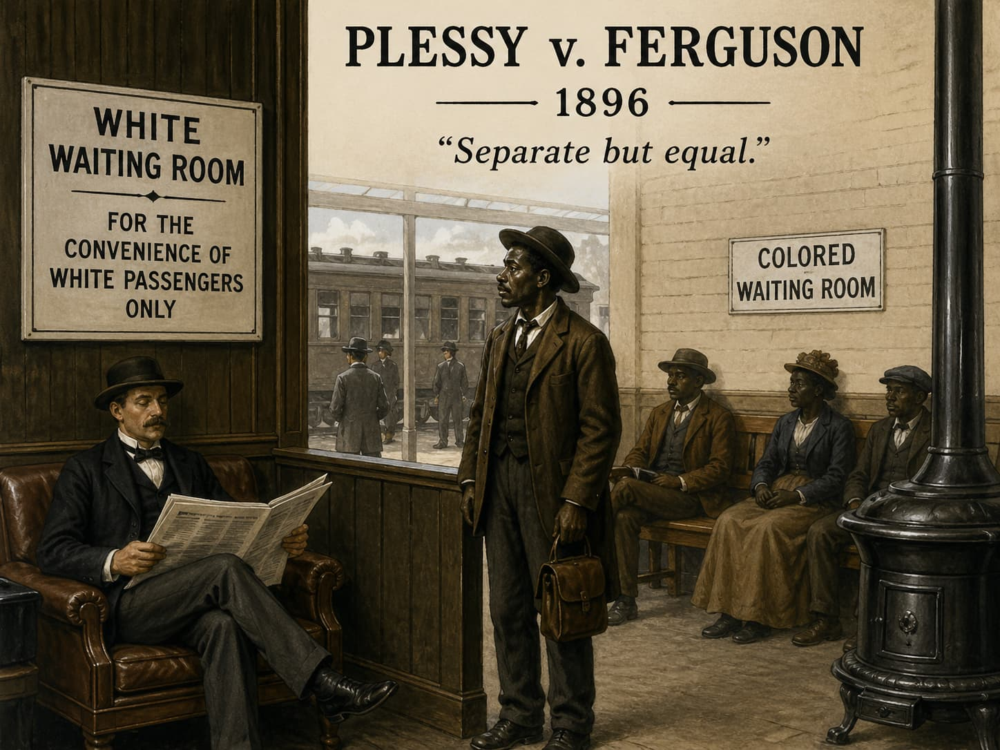
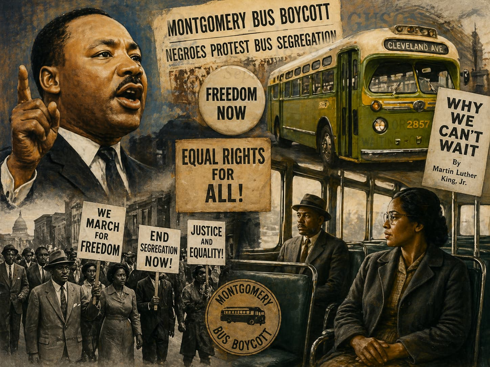

Section I
Did civil rights advance through the American system — or despite it?
The Central Thesis
Civil rights advanced in the 1950s and early 1960s through Black agency, constitutional enforcement, legal strategy, and market-driven opportunity — demonstrating that the American system possessed the capacity for self-correction.
Two Readings of Civil Rights Progress
- Progress forced on a resistant system by protest and shame
- Cold War embarrassment compelled reluctant action
- The midcentury order was built on a foundation of injustice
- Victory won against the American system
- NAACP used the courts — the system's own tools
- Eisenhower enforced federal law when states defied it
- Black poverty fell sharply before 1965 legislation — through markets
- Movement leaders demanded fidelity to the Creed — not the Creed's replacement
What Is — and Isn't — Being Claimed
- What this lecture argues: The mechanisms of correction were internal to the American system — courts, legislation, executive orders, moral persuasion
- What this lecture does not argue: That discrimination was acceptable, or that the system was just
- The key distinction: De jure Southern segregation was the core constitutional failure — and it was confronted directly
- The deeper point: The agents of change were constitutionalists — demanding the system's fidelity to its own principles
⏸ Pause & Reflect
Does it matter whether civil rights progress happened through the American system or despite it? What does your answer imply about the system's legitimacy — and about what made the movement's achievement possible?
Section II
The most sophisticated constitutional litigation campaign in American history
Plessy v. Ferguson, 1896
- 7-1 ruling endorsed "separate but equal" — upheld Louisiana's railroad segregation law
- The Fourteenth Amendment, ratified 1868, had been designed to eliminate racial hierarchy — Plessy gutted it
- Justice Harlan's lone dissent: "Our Constitution is color-blind, and neither knows nor tolerates classes among citizens."
- Jim Crow was the legal consequence: state-mandated segregation enforced by criminal penalties

Homer Plessy · New Orleans, 1896 · Library of Congress
The NAACP's Long-Game Strategy
- A series of graduate and professional school cases through the 1930s and 1940s proved separate facilities could not provide genuinely equal education
- Built the legal framework for a broader challenge
- Five cases consolidated under the Kansas filing: Brown v. Board
- Thurgood Marshall's argument: separate schools inherently unequal — psychological damage documented
- Two decades of sequenced litigation — not improvised protest

Thurgood Marshall · NAACP Chief Counsel · Public Domain · Wikimedia Commons
Brown v. Board of Education, 1954
- Unanimous 9-0 — Warren worked to bring every justice on board; a divided Court would have invited defiance
- Overturned Plessy's separate-but-equal doctrine — declared segregated public schools unconstitutional
- Not judicial activism — a restoration of what the Fourteenth Amendment had always meant
Brown II and Southern Resistance
- Implementation ruling: desegregate "with all deliberate speed"
- Deliberate ambiguity — Warren hoped to reduce resistance
- The phrase became a constitutional license for indefinite delay
- White Citizens' Councils organized economic and political pressure
- Virginia's "massive resistance" — close schools rather than integrate
- Interposition resolutions: states purporting to nullify federal court orders
- A coordinated constitutional crisis requiring executive response
⏸ Pause & Reflect
The NAACP spent two decades building its legal case in phases rather than launching an immediate attack on school segregation. Why?
- The organization lacked funding for a direct challenge to Plessy
- Graduate school cases built precedents that made a K–12 challenge legally unanswerable
- The Supreme Court had signaled it would not hear school segregation cases
- NAACP lawyers disagreed about whether segregation was unconstitutional
Section III
Constitutional duty without ideological enthusiasm
Separating Personal Views from Constitutional Performance
- Privately expressed regret at appointing Earl Warren
- Did not publicly endorse Brown
- Believed racial change was happening "too fast"
- These are genuine failures of moral leadership — stated plainly
- Understood his oath: enforce federal law regardless of personal preference
- Signed the Civil Rights Act of 1957
- Deployed the 101st Airborne to Little Rock
- The reluctance makes the performance more significant — not less
The Civil Rights Act of 1957
- First federal civil rights legislation since 1875 — an eighty-two-year gap
- Created the U.S. Commission on Civil Rights to investigate violations
- Established a Civil Rights Division in the Justice Department
- Empowered federal prosecutors to seek injunctions against voting rights interference
- Passed against Strom Thurmond's record-breaking 24-hour filibuster — with bipartisan Republican support
Little Rock, September 1957
- The Little Rock Nine — selected for academic achievement and emotional stability — attempted to enroll at Central High School under a federal court order
- Governor Orval Faubus deployed the Arkansas National Guard to physically block their entry
- State military force used to prevent the exercise of federally affirmed constitutional rights
- Eisenhower met with Faubus — believed he had secured compliance — Faubus withdrew the Guard and allowed a white mob to form

Elizabeth Eckford, Little Rock Nine · Central High School · September 1957 · Public Domain · Wikimedia Commons
Executive Order 10730 — September 24, 1957
- Federalized the Arkansas National Guard — placed it under federal command
- Deployed the 101st Airborne Division to Little Rock
- First use of federal troops to enforce civil rights in the South since Reconstruction
- Framed as law and order — not ideology. An argument even ambivalent whites could accept.
⏸ Pause & Reflect
Eisenhower framed the Little Rock intervention as a law-and-order action, not a civil rights endorsement. Does it matter, in the long run, what reasons a president gives for acting — as long as he acts? What does your answer suggest about the relationship between personal conviction and constitutional duty?
Section IV
Institutional strength and moral capital
December 1, 1955
- Rosa Parks refused to give up her seat on a Montgomery city bus — arrested under Montgomery's segregation ordinance
- Parks was a trained NAACP activist — not an accidental figure. The NAACP had been searching for the right plaintiff for months.
- Parks was selected because she was dignified, employed, and willing to submit to prosecution
- Both a genuine injustice and a deliberate provocation — designed to create conditions for a legal challenge

Rosa Parks fingerprinted · February 22, 1956 · Montgomery Bus Boycott · Public Domain · Wikimedia Commons
The Montgomery Bus Boycott, 1955–1956
- 381 days — approximately 40,000 Black Montgomery residents walked, carpooled, and rode mules rather than ride segregated buses
- Led by a twenty-six-year-old Baptist minister: Martin Luther King Jr.
- Organized entirely through the Black church network — facilities, communication, community commitment
- Not a single significant act of violence from the boycotting community — despite firebombings of King's home

Martin Luther King Jr. · Montgomery Bus Boycott · 1955–1956
The Theology of Nonviolent Direct Action
- Drawn from Gandhi, Reinhold Niebuhr, and the Sermon on the Mount
- Strategic purpose: make the moral logic of the confrontation undeniable to outside observers
- Presupposed that white America had a moral conscience that could be activated
- An appeal to shared principles — not a rejection of them
The Black Church as Organizing Infrastructure
- Physical facilities for organizing and communication
- Regular assembly — built-in community network
- Shared moral framework that sustained 381 days of sacrifice
- Trusted leadership independent of white institutions
- The boycott was not a movement of people without institutions
- It was rooted in extraordinarily vital institutions that had survived a century of legal oppression
- The Black church was the movement's primary organizing vehicle — not its accessory
⏸ Pause & Reflect
King's nonviolent strategy presupposed that white America had a moral conscience that could be activated by witnessing disciplined suffering. This presupposition was validated — but what does it tell us about the conditions that made the strategy work?
- Nonviolence always works against any sufficiently powerful opponent
- The strategy depended on the existence of shared constitutional and moral principles the movement could invoke
- The strategy succeeded primarily because of Cold War pressure on the federal government
- Black Americans had no other option available to them
Section V
What the movement was actually demanding
The Movement's Constitutional Logic
- The law must treat citizens as individuals — not as members of racial categories
- Equal protection must mean what it says, regardless of race
- The Fourteenth Amendment was always color-blind — Plessy had betrayed it
- The movement was demanding fidelity to the Creed — not the Creed's replacement
The March on Washington, August 28, 1963
- The founding principle of liberal constitutionalism — legal personality attaches to the individual, not the racial group
- The Fourteenth Amendment, finally honored
- ~250,000 people gathered at the Lincoln Memorial

Martin Luther King Jr. · March on Washington · August 28, 1963 · Public Domain · Wikimedia Commons
The Color-Blind Acts
- Prohibited discrimination on the basis of race, color, religion, or national origin
- Covered employment, public accommodations, federally funded programs
- Did not create preferences — it prohibited racial classification as a basis for treatment
- Prohibited discriminatory voting practices — poll taxes, literacy tests used selectively
- Federal enforcement of the Fifteenth Amendment — ratified 1870, systematically evaded ever since
- Color-blind in application: no citizen could be denied the vote on account of race
A Question the Evidence Leaves Open
⏸ Pause & Reflect
King's "I Have a Dream" speech expresses a color-blind ideal — judgment by character, not skin color. Affirmative action programs classify citizens by race to remedy past discrimination. Are these two frameworks consistent or contradictory — and what does your answer imply about the direction the movement took after 1965?
The Module Takeaway
- The "Happy Days" were earned — and incomplete
- The 1960s upheavals were a partial break from those foundations — not their inevitable fulfillment
- Both facts belong in the analysis